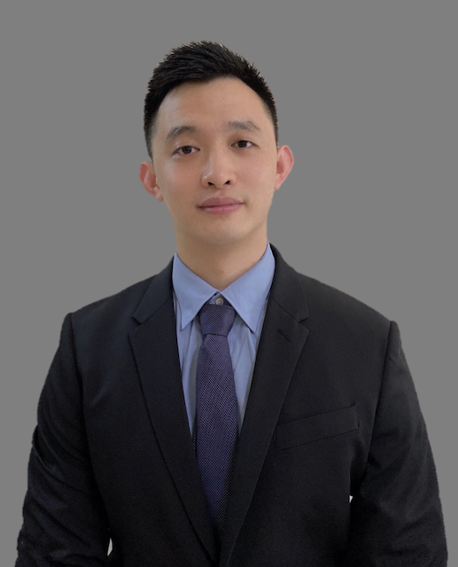

目前我院开设睡眠专家门诊，采用“MDT多学科综合诊治”的方式，对于疑难患者采用心理医生、精神科医生、内科医生多学科会诊， 如果评估为精神心理因素导致的失眠由精神科医生制定相应的治疗方案；如果属于呼吸暂停等内科疾病，由内科进一步处理，实现精神科、睡眠医学、内科的多科联合。
于跃，主治医师、心理治疗师、睡眠医师，四川大学华西医学院研究生，在华西医学院完成规范化培训， 先后在华西医院睡眠中心和神经内科脑电图中心进修学习睡眠医学和脑电图技术，有丰富的睡眠图分析和睡眠疾病治疗经验。 参与课题5项，受聘电子科技大学成都脑科学研究院助理研究员。主治：抑郁、焦虑，各种原因导致的难治性失眠、阻塞性睡眠呼吸暂停低通气综合征、 不宁腿综合征、发作性睡病、睡行征、快动眼睡眠期的行为障碍等睡眠疾病，以及儿童青少年睡眠障碍。
门诊安排：失眠抑郁门诊：周二下午；睡眠专家门诊：周三下午
赵华昌 ：毕业于四川大学临床医学专业，从事内科临床工作18年，副主任医师、中级心理治疗师，成都市第四人民医院内二科主任， 四川省预防医学会慢病管理分会委员；四川省预防医学会呼吸病学分会委员；四川康复医学会肺康复分会委员及重症医学分会委员； 四川省老年医学会呼吸病会分会委员及心血管分会委员；四川省中医药信息学会理事；成都市120中心AHA导师。 2018年8月19日中国医师节被评为“成都优秀医师”；四川省中医药信息学会和人民日报百姓周刊在致改革开放40周年纪念活动中评为“四川省医疗卫生行业十优医生”， 以第一作者身份发表医学论文15篇，编写医学科普书籍《五高疾病的防治》一部，新型实用专利2项。除内科学资质外，还拥有重症医师专科资质， 二类医疗器械电子支气管镜操作资质，熟悉各类内科疾病的诊治工作，长期从事呼吸及危重医学、呼吸睡眠暂停低通气综合征、吸烟相关疾病、老年病、风湿免疫性疾病、 肿瘤疾病等的诊疗管理工作；参与各类急危重症处置工作；熟练操作电子支气管镜及相关的检查和治疗，肺癌电切、冷冻、支架置入及良性气道狭窄再通等治疗， 掌握同期双肺大容量肺灌洗治疗技术。我的工作信条是：“与患者一起共同面对困难！”
门诊安排：内科门诊：周四全天